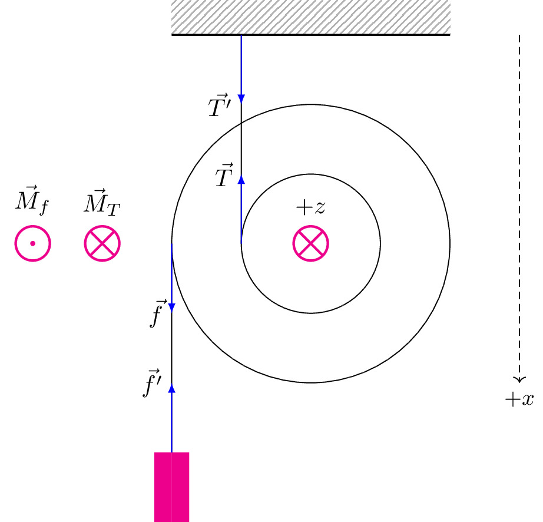

pre.tex
\documentclass[tikz]{standalone}\input{pre.tex}\begin{document}\begin{tikzpicture}
\draw[interface] (-2,3) rectangle (2,3.5);
\draw[thick] (-2,3) -- ++(4,0);
% \clip (-6,-1) rectangle (6,4.25);
\draw (0,0) circle (2cm);
\draw (0,0) circle (1cm);
\draw (-1,0) coordinate (1) -- ++(0,3) coordinate (2);
\draw (-2,0) coordinate (3) -- ++(0,-3) coordinate (4);
\fill[magenta] (4) rectangle ++(-0.25,-1);
\fill[magenta] (4) rectangle ++(0.25,-1);
\draw[force,->] (1) -- ++(0,1) node[left] {$\vec{T}$};
\draw[force,->] (2) -- ++(0,-1) node[left] {$\vec{T'}$};
\draw[force,->] (3) -- ++(0,-1) node[left] {$\vec{f}$};
\draw[force,->] (4) -- ++(0,1) node[left] {$\vec{f'}$};
\draw[] (0,0) coordinate (o) node[magenta, scale=1.5] {$\bigotimes$} node[above, yshift=0.8em] {$+z$};
\draw[] (-3,0) coordinate (o) node[magenta, scale=1.5] {$\bigotimes$} node[above, yshift=0.8em] {$\vec{M}_T$};
\draw[] (-4,0) coordinate (o) node[magenta, scale=1.5] {$\bigodot$} node[above, yshift=0.8em] {$\vec{M}_f$};
\draw[axis,->,black] (3,3) -- (3,-2) node[below] {$+x$};
% \draw (0,0) circle (2cm);
% \fill[magenta] (0,0) circle (2pt) coordinate (c);
% \fill[magenta] (0,3) circle (2pt) coordinate (o);
% \draw (0,3) circle (1cm);
% \draw[axis] (0,0) circle (3cm);
% \draw[axis] (0,0) -- (0,5);
% \draw (0,0) ++(150:3) coordinate (oo) circle(1cm);
% \draw[axis,-<] (0,0) -- ++(150:5)node[left] {$-n$};
% \draw[axis] (0,0) -- (0,5);
% \draw[axis] (oo) -- ++(0,3.5);
% \draw[axis] (oo) -- ++(0,-3.5) coordinate (phi);
% \draw[force,->] (0,0) ++(150:2) -- ++ (150:1.5)node[above] {$\vec{N}$};
% \draw[force,->] (0,0) ++(150:3) -- ++ (240:1.5)node[below] {$\vec{v}$};
% \draw[force,->] (oo) -- ++ (0,-1.5) node[below] {$m\vec{g}$};
% \fill[magenta] (oo) circle (2pt);
% \draw pic["$\phi$",draw=magenta,<-,angle eccentricity=1.5,angle radius=.5cm] {angle=phi--oo--c};
% \draw pic["$\phi$",draw=magenta,<-,angle
% eccentricity=1.5,angle radius=0.5cm] {angle=o--c--oo};
% \lineann[6]{90}{1.5}{$h^*=h_0\cdot\cos\phi$}
% \lineann[-5]{90}{3}{$h_0=r+R$}
% \contourlength{2mm}
% \draw (2,0) node[] {\contour{white}{$W_\text{п}=0$}};
\end{tikzpicture}\end{document}